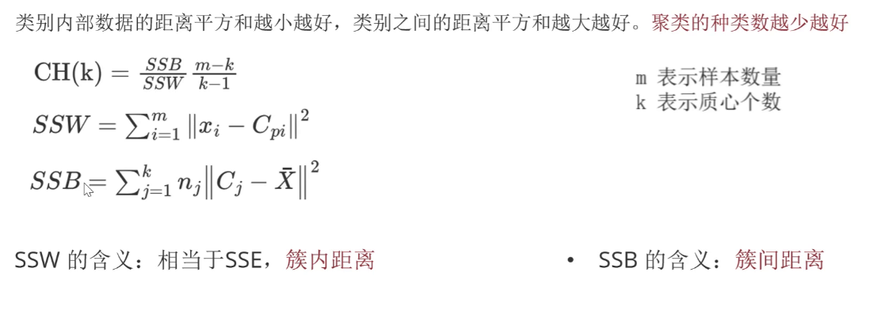

机器学习–聚类算法
一、概念
1. 什么是聚类算法？
聚类算法是一种无监督学习的方法，旨在将数据分成若干个簇（组），同一簇内的样本相似度高，不同簇间的样本差异大。
其核心是根据样本之间的==相似性==（物以类聚，人以群分），将样本划分到不同的类别中，常使用==欧式距离==进行计算相似度。
聚类算法的目的是在没有先验知识的情况下，==自动寻找规律==，发现数据集中的内在结构和模式。
2. 聚类算法的分类
颗粒度：==粗==聚类、==细==聚类。
实现方法： ==K-means聚类==、层次聚类、 DBSCAN聚类、谱聚类
- 基于划分的聚类：==K-Means算法== –> 按照==质心==（一个簇的中心位置，通过计算==均值==得来）分类；
- 基于层次的聚类：DIANA（自顶向下）AGNES（自底向上）
- 基于密度的聚类: DBSCAN算法
- 基于图的聚类: 谱聚类（Spectral Clustering）
- …
二、KMeans算法
1. 核心思想：
- 根据==平均值==找到最优的==K个质心==，通过不断优化质心位置和数据点分配，实现数据的自然分组。
2. 核心作用：
- 在没有先验知识的情况下，自动发现数据中的分组结构，为数据理解、后续分析和实际应用提供基础。
3. 具体流程：
- 事先确定常数K，常数K意味着最终的聚类类别数；
- 随机选择K个样本点作为初始聚类中心；
- 计算每个样本到K个中心的距离，选择最近的聚类中心点作为标记类别；
- 根据每个类别中的样本点，重新计算出新的聚类中心点(平均值)，如果计算得出的新中心点与原中心点一样则停止聚类，否则重新进行第3步过程，直到聚类中心不再变化。
4. API
- sklearn.==cluster==.KMeans 核心参数是n_clusters 代表质心数
5. 如何寻找最优K值？（通过观察图像判别）
SSE 肘部突然变缓位置是最优值 核心思想:簇内距离
SC 最大位置是最优值 核心思想:簇内距离+簇间距离
CH 最大位置是最优值 核心思想:簇内距离+簇间距离+K值
6.KMeans评估指标
（一）SSE（Sum of Squared Errors，误差平方和）
- 公式：SSE = ΣΣ ||x - μᵢ||²
- 含义：所有样本到其所属簇中心的距离平方和
- 特点：越小越好，衡量簇内紧密度
SSE的优点：
- 计算简单快速
- 物理意义明确，直接衡量聚类密度
- 肘/部方法直观易懂
SSE的缺点：
- 对K值敏感，K值增加必然减小
- ==无法评估簇间分离程度==（separation）
- 对异常值敏感
- 需要配合肘/部方法主观判断
==肘/部方法==（Elbow Method）：是一种通过分析SSE随K值变化趋势来确定最佳聚类数的直观方法
核心思想：
- 随着聚类数K的增加，SSE会单调递减
- 当K从1开始增加时，SSE下降幅度很大
- 达到某个K值后SSE下降幅度==突然变缓==
- 这个==转折点==就像==“手肘“==一样，对应==最优聚类数==
优缺点：
- 优点：
- 直观易懂：可视化效果明显
- 无需先验知识：不需要知道真实聚类数
- 计算简单：只需运行K-Means和计算SSE
- 广泛适用：适用于大多数数据集
- 缺点：
- 主观性强：肘点位置可能不明显
- 不总是有效：有些数据没有明显的肘部
- 忽略其他因素：只考虑SSE，不考虑簇的形状、密度
- 计算成本：需要多次运行K-Means
（二）SC（Silhouette Coefficient，轮廓系数）
- 公式：对于每个点i，计算：
a(i) = 同簇内其他点的平均距离（内聚程度（Cohesion））
b(i) = 到最近其他簇的平均距离（分离程度（Separation））
s(i) = (b(i) - a(i)) / max(a(i), b(i))，==max(a,b)的目的是归一化== - ==范围：[-1, 1]，越接近1越好，SC值越大聚类效果越好==
- 特点：综合考虑内聚度和分离度
SC的优点：
- ==同时考虑簇内紧密度和簇间分离度==
- ==有明确的范围[-1,1]==
- 对聚类形状适应性较好
- 不需要外部标签
SC的缺点：
- 计算==复杂度高==（O(n)²）
- 对凸性簇效果更好
- 样本量大时==计算代价高==
（三）CH轮廓系数法（Calinski-Harabasz Index）
==CH系数考虑簇内的内聚程度、簇外的离散程度、质心的个数（K值的数量/聚类数）==
- 类别==内部==数据的距离平方和==越小越好==，类别==之间==的距离平方和==越大越好==。聚类的==种类（K）数越少越好==

- 公式：CH = [SSB/(k-1)] / [SSW/(n-k)]
- SSB：==簇间==离散度
- SSW：==簇内==离散度
- 特点：值越大越好，类似方差比
CH的优点：
- ==计算相对较快==
- 基于方差分析，理论完备
- 对簇数量变化敏感
- ==值越大表示聚类效果越好==
CH的缺点：
- （近似）==假设==簇是凸性且方差相近
- 对簇大小不均衡敏感
- ==需要足够样本量==
（四）使用场景建议
推荐使用SSE时：
- ==数据量非常大==，需要快速评估
- 结合==肘/部方法==选择K值
- ==初步了解==聚类方法
推荐使用SC时：
- 数据量适中==（n < 10⁴）==
- 需要==全面评估==聚类质量
- 不知道最佳K值
推荐使用CH时：
- 簇大致为凸性且大小相近
- 需要快速==评估多个K值==
- ==结合其他指标使用==
（五）最佳实践建议
- 组合使用：不要依赖单一指标，建议至少使用两种指标
- 肘部法+轮廓法：==先用SSE肘部法确定大致k范围，再用SC精细选择==
- 多维度验证：
- 可视化聚类结果
- 结合领域知识
- 使用外部指标（如果有标签）
- 注意事项：
- 数据标准化会影响指标值
- 不同指标可能给出不同最优k
- 结合实际业务需求选择
推荐流程：==先使用CH快速筛选几个候选k值，再用SC详细评估，最后结合SSE肘部图和领域知识确定最终k值==。